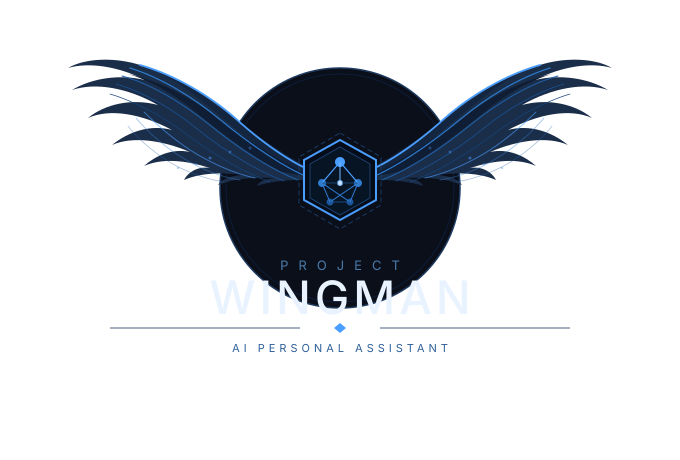
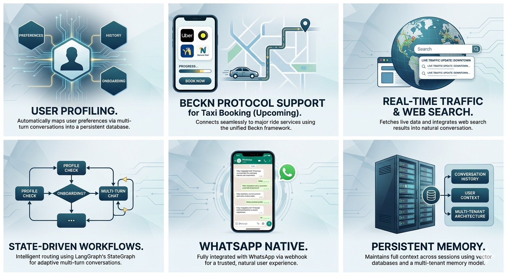

Personal AI Assistant on WhatsApp
Agentic AI · LangGraph · WhatsApp Integration
Project Wingman is a WhatsApp-integrated AI personal assistant built on an Agentic AI architecture. It goes beyond simple chatbot interactions by profiling users over time, delivering curated and context-aware responses, and performing real-time Traffic or Web searches to provide the up-to-date information. The system leverages a state-driven multi-agent workflow powered by LangGraph with third party tool integrations like Tom-Tom traffic, Maps, Publicaly available government websites, ensuring each interaction is routed intelligently through profile checking, data extraction, and conversational response pipelines. Upcoming features include Beckn protocol support for booking Taxi support on Uber, Namma Yatri etc..
Automatically profiles users through multi-turn conversations, storing preferences and context in a persistent database for personalized interactions.
Supports taxi booking using Beckn protocol for Uber, Ola, Namma Yatri etc..
Performs live web searches when queries require the latest information, seamlessly integrating search results into conversational responses.
Uses LangGraph's StateGraph for intelligent routing — handling profile checks, proactive data extraction, onboarding, and multi-turn conversations.
Fully integrated with WhatsApp via webhook, providing a natural conversational interface that users already know and trust.
Maintains conversation history and user context across sessions using vector databases and multi-tenant memory architecture.